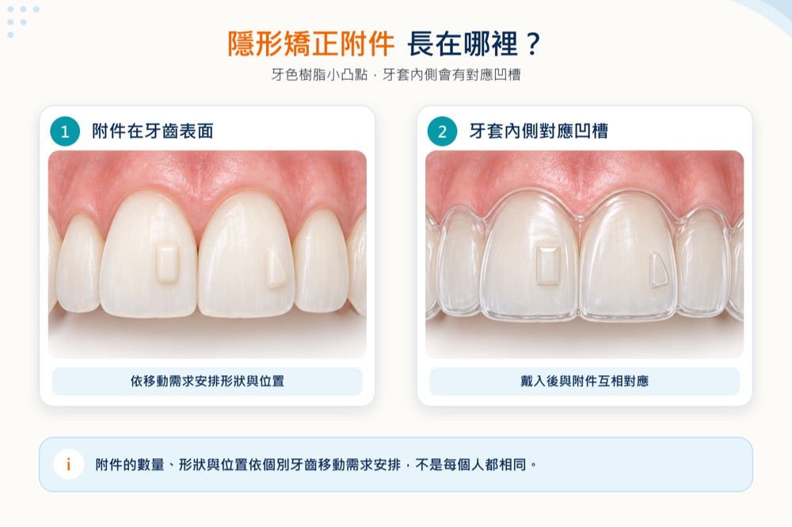
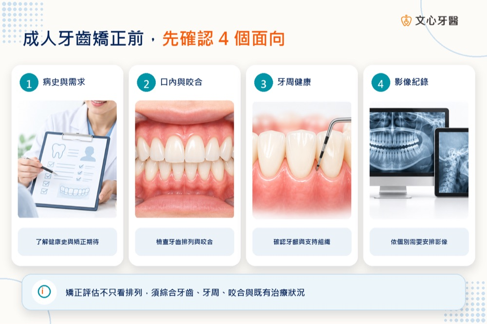
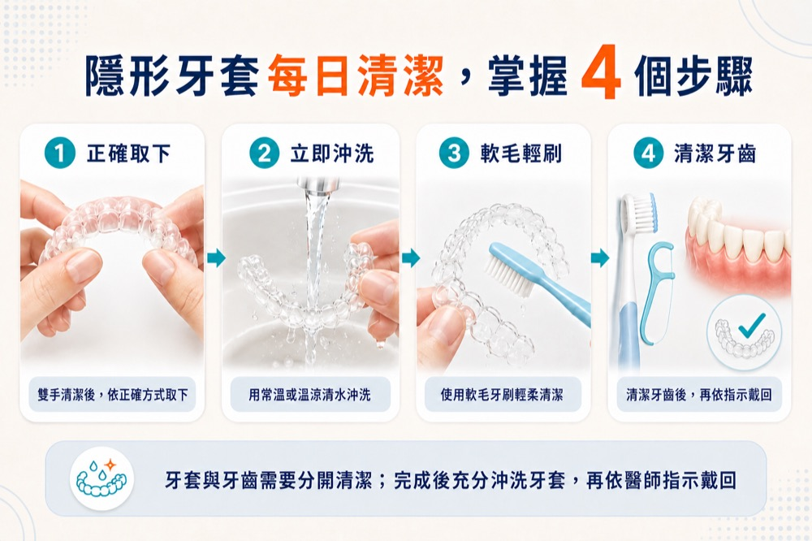
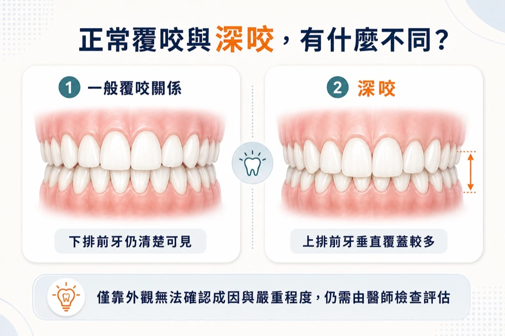
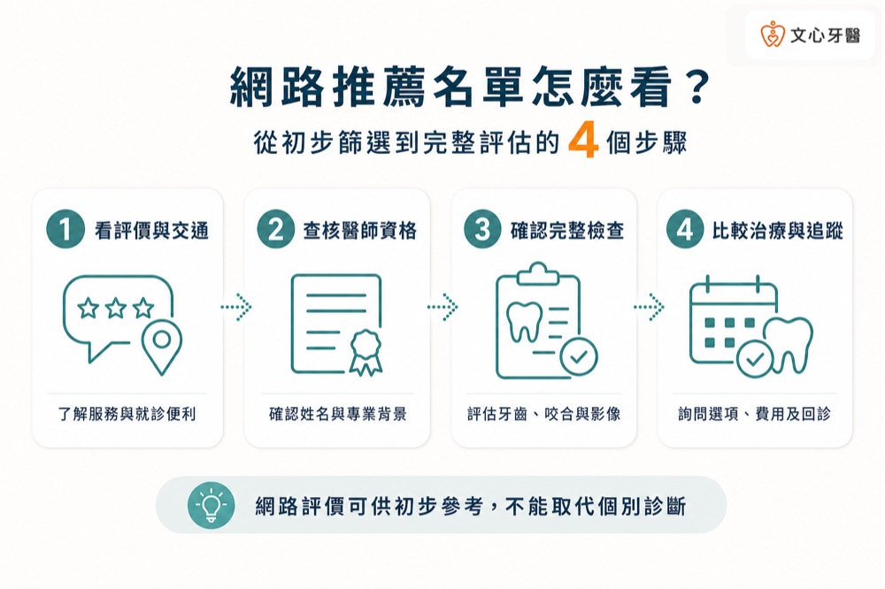
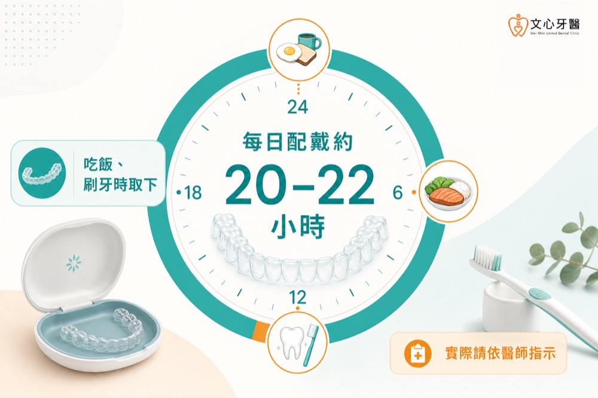
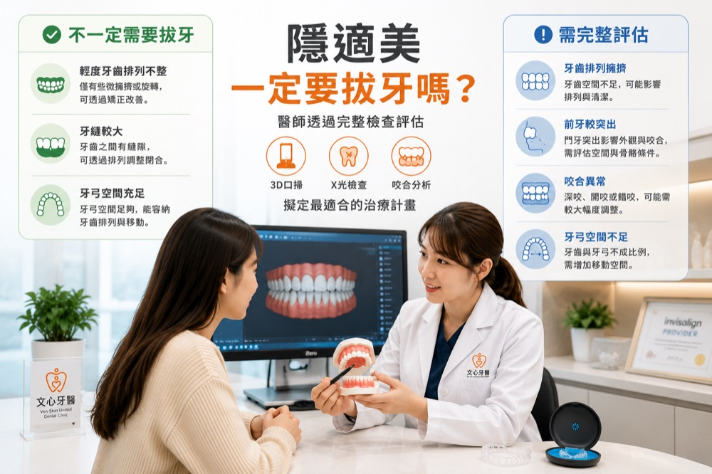
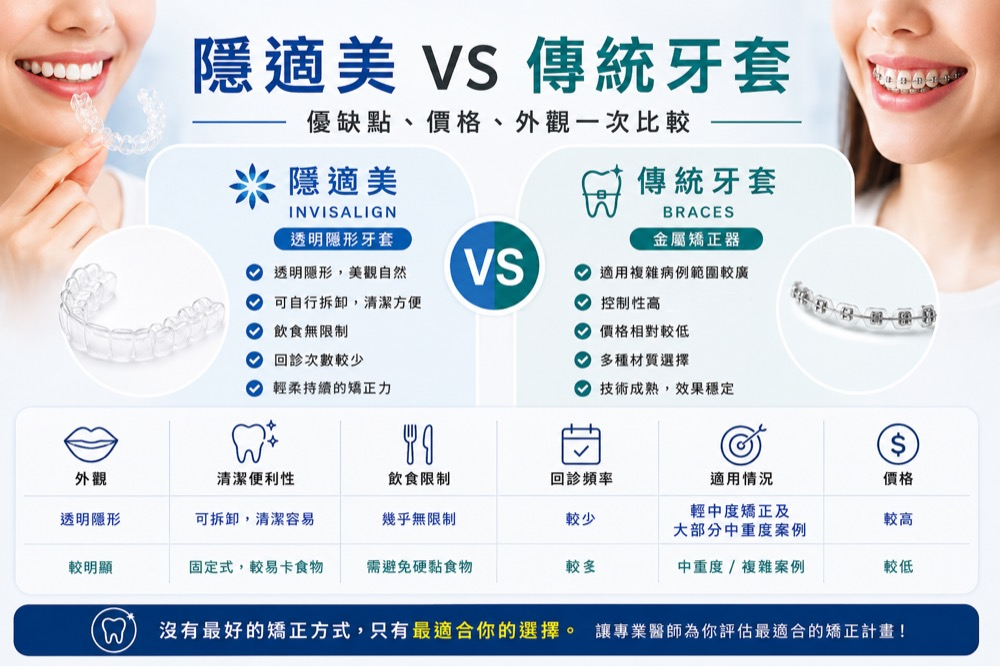
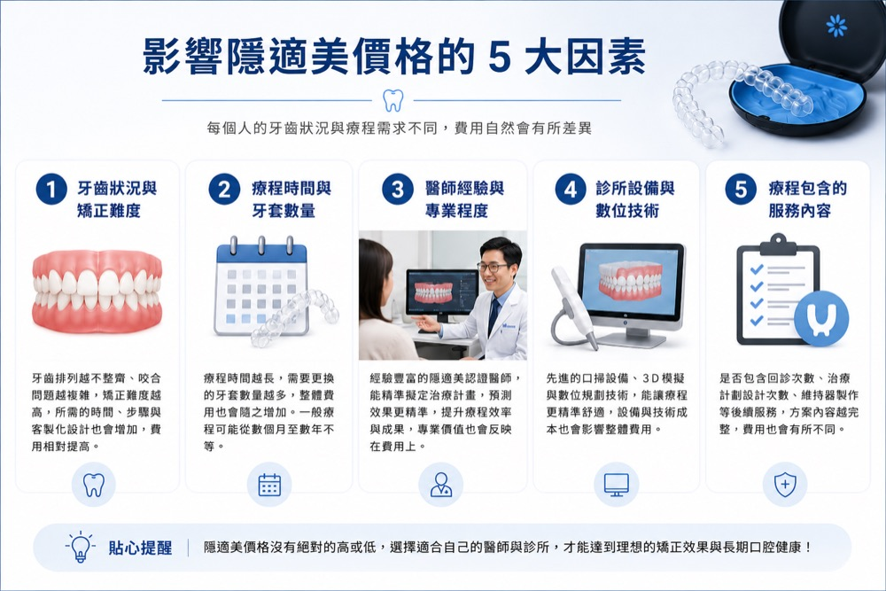

牙齒知識
矯正知識
矯正知識共 10 篇。

隱形矯正附件是什麼？會掉嗎、會痛嗎、影響美觀嗎？
隱形牙套上的小凸點是什麼？本文說明隱形矯正附件的作用、外觀與裝設方式，以及剛裝不適、附件掉落、清潔與療程後移除的處理重點。
閱讀全文
成人牙齒矯正前要做哪些檢查？蛀牙、牙周病、缺牙可以直接矯正嗎？
成人做牙齒矯正前要檢查什麼？本文整理病史、口內咬合、牙周、蛀牙與必要影像評估，並說明缺牙、假牙、植牙及智齒的治療順序。
閱讀全文
透明牙套怎麼清潔？隱形牙套喝咖啡、變黃處理重點
透明牙套、隱形牙套怎麼清潔？配戴時以白開水為主，咖啡與其他飲料建議先取下。整理每日清潔 5 步驟、變黃、異味與外出照護原則。
閱讀全文
上排牙齒蓋住下排牙齒是深咬嗎？一定要矯正嗎？
上排牙齒蓋住下排牙齒，可能是深咬的表現，但不一定都要矯正。本文整理深咬症狀、可能影響、檢查方式，以及什麼情況建議接受牙齒矯正評估…
閱讀全文
台南牙齒矯正推薦怎麼看？挑選醫師與診所前應確認的 6 個重點｜文心牙醫
搜尋台南牙齒矯正推薦，不只看評論與價格。本文整理醫師資格、完整檢查、方案與限制、費用、回診追蹤及溝通等6項查核重點，協助您在初診…
閱讀全文
台南隱適美要戴多久？療程時間、每日配戴時數與影響因素整理
隱適美一天要戴多久、每副牙套多久更換、完整療程多久？本文整理每日建議配戴時數、5項影響療程因素與配戴不足時的處理原則；實際安排依…
閱讀全文
隱適美需要拔牙嗎？哪些情況需要、哪些不用？醫師完整解析
隱適美需要拔牙嗎？並非每個人都要拔牙。本文整理牙齒擁擠、前牙突出、牙弓空間不足等可能需要拔牙的情況，以及醫師如何檢查評估。
閱讀全文第一次諮詢隱適美會做什麼？一定要 3D 口掃、拍 X 光嗎？醫師解析第一次看診流程｜文心牙醫
第一次諮詢隱適美會做哪些檢查？本文整理初次看診流程，包含3D口腔掃描、全口X光、側顱X光、口腔檢查及療程評估，協助了解醫師如何判…
閱讀全文
隱適美跟傳統牙套哪個比較快？價格、優缺點與適合對象比較
隱適美與傳統牙套哪個比較快？一次比較療程時間、價格、外觀、舒適度、清潔方式與適合對象，協助您在矯正諮詢前掌握選擇重點。
閱讀全文
台南隱適美價格大概多少？5大費用因素、評估流程與常見問題
想了解台南隱適美價格與牙齒矯正費用？實際費用會依咬合難度、療程時間、牙套副數及其他治療而異。本文整理5大費用因素、療程包含項目與…
閱讀全文